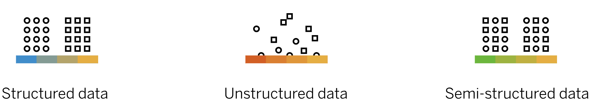
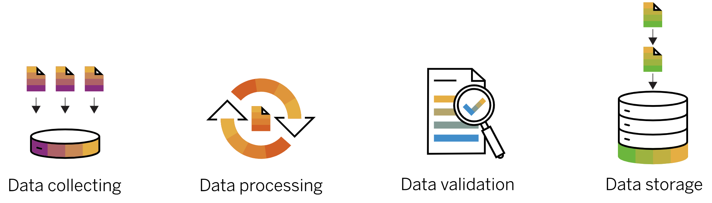
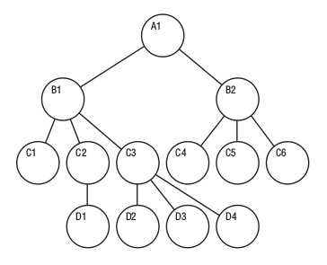

Data: Data refers to a collection of facts, statistics, measurements, or information that is represented in a structured or unstructured format. It is the raw material that is processed and analyzed to extract meaning, insights, and knowledge. Data can take various forms, including text, numbers, images, audio, video, or any other type of digital representation.
Big-data:
In the context of big data, "data" refers to the vast volumne, variety, and velocity of information that is generated and collected from varioys sources.
Data is essential to the operation and survival of a business. Organizations need to understand data properly and find the information that matters to them within the data noise of the diverse systems and technologies that support today's highly connected global economy.
But alone data are worthless. Businesses need an effective strategy, governance and data management model to use all forms of data for practical and efficient use in supply chains, employee, customer and partner networks and more.
Types of Big Data
There are three types of big data:
Structured:
Structured data is highly organized and follows a predefined format or schema. It is typically represented in tabular form, such as relational databases, spreadsheets, or CSV files. Each piece of data in structured format is labeled and stored in clearly defined fields or columns, allowing for easy organization and analysis. Example of tabular form of data:
relational databases,
spreadsheets
CSV files.
Unstructured:
Unstructured data does not have a predefined format or organization. It includes
text documents,
emails,
images,
social media posts,
Videos
audio recordings
other forms of content.
Unstructured data lacks a fixed schema and requires additional processing or analysis to extract useful insights.
Semi-Structured:
Semi-structured Data is a mix of the two, containing some elements of structure and some that are unstructured. Semi-structured data has some organizational structure but does not strictly conform to a predefined schema. Examples include:
JSON (JavaScript Object Notation),
XML (eXtensible Markup Language), and
log files.

Data management
Data management is the practice of collecting, organizing, and accessing data to support productivity, efficiency, and decision-making. Given the central role data plays in today's economy, a solid data management strategy and modern data management system are essential for any business - regardless of size or industry.
Data management process procedure:
The data management process involves several tasks to ensure the effective handling of data throughout its lifecycle. Here are some common tasks involved in the data management process:
Data Collection
Data Storage
Data Cleaning and Transformation
Data Integration
Data management process tasks:
Integration of different types of data from different sources, including structured and unstructured data
Ensuring high data availability and disaster recovery
Governing the use of and access to data by employees and applications
Protection and security of data and ensuring data protection

Database & Database management systems (DBMS)
Database:
A database is a structured collection of data organized and stored in a way that enables efficient retrieval, updating, and management of information. It is a key component of data management systems and serves as a repository for storing and organizing data in a structured manner
Database management systems (DBMS):
A Database Management System (DBMS) is software that enables users to create, manage, and manipulate databases. It provides an interface between the database and end-users or applications, allowing them to interact with the database efficiently and securely. DBMSs handle tasks such as data storage, retrieval, organization, security, and integrity.
Types of DBMSs:
There are different types of DBMSs:
Relational DBMS:
organizes data in tables with rows and columns, and uses SQL to manipulate the data. Examples:
MySQL - a popular open-source DBMS that uses SQL as its QL.
PostgreSQL - an open-source DBMS that uses SQL as its QL.
Oracle Database - a commercial DBMS that uses SQL as its QL.
Microsoft SQL Server - a commercial DBMS from Microsoft that uses SQL as its QL.
SQLite - is a lightweight, embedded Relational DBMS, as it stores data in tables with rows and columns, and uses SQL as its query language. It is often used as a local storage solution for mobile apps and other small-scale applications.
BigQuerry -
BigQuery is a specific implementation of a query language developed by Google, used to manage data stored in the cloud. It is a fully managed, serverless data warehouse that enables users to run complex SQL queries on petabyte-scale data sets. It is a part of the Google Cloud Platform (GCP) and integrates with other GCP services, such as Cloud Storage and Cloud Dataflow, to enable data analytics and machine learning.
BigQuery supports standard SQL syntax and has additional features like user-defined functions and scripting. It allows users to process data in real-time using streaming inserts, provides automated backups and data replication across regions for data durability, and supports the use of machine learning models for advanced analytics.
NoSQL DBMS:
used for managing unstructured data such as social media posts, multimedia content, and documents. Examples:
MongoDB - a NoSQL document database that uses its own query language called the MongoDB Query Language (MQL).
Cassandra - a NoSQL column-family database that uses CQL (Cassandra Query Language) as its QL,
Redis - is a NoSQL DBMS, as it is an in-memory key-value store that does not use traditional table structures. It uses its own query language called Redis Commands.
Object-Oriented Databases (OODBMS): Object-oriented databases store objects directly, preserving their relationships and behaviors. They are suitable for object-oriented programming languages and applications that heavily rely on object-oriented concepts. OODBMSs provide features like encapsulation, polymorphism, and inheritance. Examples include ObjectDB and ObjectStore.
Hierarchical Databases: Hierarchical databases organize data in a tree-like structure, where each record has a parent-child relationship. These databases were popular in early mainframe systems but are less prevalent today. IBM's Information Management System (IMS) is an example of a hierarchical database.

Image credit:Hierarchical Databases
Network Databases: Network databases are similar to hierarchical databases, but they allow more complex relationships between records. They use a network model, where records can have multiple parent and child relationships. The CODASYL (Conference on Data Systems Languages) database management system is an example of a network database.
Distributed Databases: Distributed databases store data across multiple computers or servers, connected by a network. They offer advantages like high availability, fault tolerance, and scalability. Distributed databases are commonly used in large-scale applications and systems that require data replication and distribution across multiple locations.
Data Warehouses: A data warehouse is a centralized repository that integrates and stores large volumes of structured, historical, and potentially heterogeneous data from various sources within an organization. It is designed to support the analysis and reporting needs of business intelligence and decision-making processes. A data warehouse provides a unified and consistent view of data, making it easier to extract valuable insights, identify trends, and make informed business decisions.
Process of managing database
The process of managing a database typically involves the following tasks:
Designing the database: this involves defining the structure of the data, creating tables and relationships, and setting up security and access controls.
Data entry and maintenance: this involves adding, editing, and deleting data in the database, as well as ensuring that data is accurate and up-to-date.
Backups and recovery: this involves creating regular backups of the database to prevent data loss, and setting up recovery mechanisms in case of data corruption or system failure.
Performance optimization: this involves monitoring the database for performance issues, identifying bottlenecks, and tuning the system to ensure optimal performance.
Example 1: a small business may use a relational DBMS such as MySQL to manage customer data, inventory records, and sales data. The DBMS would be used to create tables for each type of data, set up relationships between the tables, and create queries to retrieve and manipulate the data. The DBMS would also be used to secure the data and create regular backups to prevent data loss.
Example 2: In another example, a social media platform may use a NoSQL DBMS such as MongoDB to manage user profiles, posts, and multimedia content. The DBMS would be used to store the data in a flexible document format, provide search capabilities, and scale horizontally to handle large volumes of data. The DBMS would also be used to optimize performance and ensure data security.
Cloud based DBMS
A cloud-based DBMS is a type of database management system that is hosted on a cloud computing platform. It provides users with access to their databases from anywhere with an internet connection, and offers scalability, flexibility, and reliability.
Cloud-based DBMS can be divided into two categories:
Database-as-a-service (DBaaS):
This type of cloud-based DBMS offers a fully managed database service where the cloud provider takes care of all the management tasks, such as software updates, backups, and security.
Example:
Amazon RDS,
Google Cloud SQL, and
Azure SQL Database.
Infrastructure-as-a-service (IaaS):
This type of cloud-based DBMS offers users more control over their database environment. They can choose their own operating system, software, and configuration settings.
Example:
Amazon EC2,
Google Compute Engine, and
Microsoft Azure Virtual Machines.
Advantages:
Scalability: Cloud-based DBMS can easily scale up or down depending on the needs of the business. This allows for cost-effective data management and storage.
Accessibility: Cloud-based DBMS can be accessed from anywhere with an internet connection, which makes it easy for multiple users to collaborate and work on the same data.
Security: Cloud-based DBMS typically have built-in security features that protect the data from unauthorized access, such as encryption and user authentication.
Cost-effectiveness: Cloud-based DBMS can be more cost-effective than traditional on-premises solutions since there is no need to invest in expensive hardware and infrastructure.
Performance: Cloud-based DBMS can offer high performance and low latency, allowing for real-time processing and analysis of large amounts of data.
Examples of some popular cloud-based DBMS:
Bigquery - BigQuery is a specific implementation of a query language developed by Google, used to manage data stored in the cloud.
Amazon Redshift - A cloud-based data warehouse provided by Amazon Web Services (AWS).
Snowflake - A cloud-based data warehousing platform.
Microsoft Azure Synapse Analytics - A cloud-based analytics service that provides data warehousing and big data processing.
Apache Hive - An open-source data warehousing and SQL-like query language used with Hadoop.
Apache Drill - A schema-free SQL query engine for big data.
Presto - An open-source distributed SQL query engine for big data.
Apache Cassandra - An open-source distributed NoSQL database that supports SQL-like querying.
MemSQL - An in-memory database platform that provides SQL querying and real-time analytics.
Google Cloud Spanner - A globally distributed relational database that provides SQL querying.
IBM Db2 - A relational database management system that provides SQL querying and is available on-premise or as a cloud service.